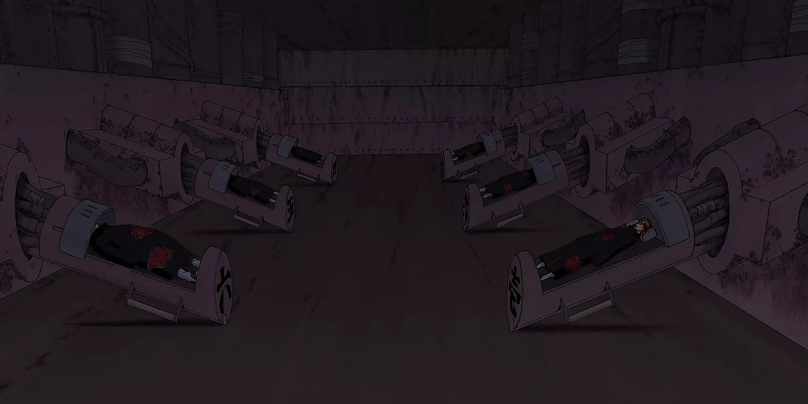

The Six Paths of Pain (ペイン六道, Pein Rikudō) is an Outer Path technique that allows a Rinnegan user to manipulate up to six bodies as though they are their own.

The user embeds one or more black receivers into a body, allowing them to channel their chakra into it from great distances. To make full use of the body, the user ideally transmits their chakra from the highest and closest point possible so that they can have the best possible range. Once their chakra enters the body, they are given complete control of it, allowing them to decide all of its actions, its use of jutsu, and even speak through it. As a representation of this control the controlled bodies' eyes take on the same appearance as the user's. Inoichi Yamanaka compared this technique to the Yamanaka clan's Mind Body Switch Technique, albeit on a greater scale.
When multiple bodies are controlled together the user is able to see through all of their eyes, thus registering six separate fields of vision at the same time. With this shared vision, the user can coordinate their attacks and provide defences for their blindspots. For this reason, the Six Paths of Pain are strongest when used together, employing combination tactics, the element of surprise, and/or sheer overwhelming power to defeat their enemies.
The technique has a drawback. If the caster of the technique is interrupted in any way while transmitting chakra to the bodies being used as part of the technique, then all of the bodies will stop moving and become very vulnerable to attack. The Deva Path, through Yahiko's body, was momentarily interrupted while it was fighting Naruto, allowing the latter to easily land a punch on the enemy.
Nagato created the Six Paths of Pain after he was left crippled during a battle with Hanzō. Unable to move or act on his own, he controlled six corpses to carry out his will as part of his "Pain" identity. In the anime, the first body used, belonged to his childhood friend Yahiko, which was his favourite. To match his late friend's hair colour, he had the other Paths' hair dyed to the same colour, including eyebrows. Unbeknownst to Nagato, his first Six Paths of Pain were actually composed of individuals that Jiraiya had met when they were alive. Nagato implants their black receivers all over their bodies as body piercings.
Each of the Six Paths of Pain can be used to perform any technique that Nagato himself is capable of, however, he limits each body to one branch of the Six Paths Techniques, the exception being Yahiko's body (the Deva Path) through which he performs a number of miscellaneous jutsu; the King of Hell and the creatures summoned by the Animal Path are part of his shared vision. Nagato refers to each body by the Path it embodies and has them serve specific purposes, be it offensive or defensive, reconnaissance or repair. Each of the Paths has its own importance in a fight – the Naraka Path's ability to restore all the other Paths making it the most valuable – and therefore, Nagato will sacrifice other Paths to protect those further up the hierarchy.
Because of his lack of mobility, Nagato requires a great deal of preparation time to use his Six Paths of Pain, especially when moving outside his usual residence in Amegakure. Some of the Six Paths Techniques are very chakra-taxing, and in order to use them Nagato must either bring the respective body closer to his position or alternatively cut off control of the other five Paths and focus all of his chakra into the one. The greatest weakness of his Six Paths of Pain is that each body has only one primary ability; if an enemy has prior knowledge of what body does what, they stand a better chance of defeating the Paths.
When not in use, Nagato stores the bodies in a hidden chamber within Amegakure's tallest tower. Within the room are six "pods", in which the bodies rested; each pod is connected to the wall via pipes or wires and has a sliding cover that appears to feature the symbol of Amegakure, which conceals the face of the inactive body. The pods are also numbered from one through six using daiji characters and are ordered counter-clockwise around the room with a numbering scheme that corresponds with the ordering of the six Buddhist Paths of Reincarnation:
(1) - Deva Path
(2) - Asura Path
(3) - Human Path
(4) - Animal Path
(5) - Preta Path
(6) - Naraka Path
Obito Uchiha creates his own Six Paths of Pain during the Fourth Shinobi World War using the reincarnated jinchūriki.Obito controls his Six Paths using a single black receiver embedded into the left side of each of their chests, which were hidden from view. When transformed into the tailed beast, the receivers move from the chest to the neck. He also seals their respective tailed beast back into their bodies, which he maintains control of through the Demonic Statue of the Outer Path.
Obito can force the jinchūriki to transform into their full Tailed Beast Modes, but this carries an increased risk of the beasts subverting his commands.Because of how much effort it requires to keep six tailed beasts under his control at once, Obito does not channel the Six Paths Techniques into his Six Paths of Pain. Rather, he uses the same abilities that they had when they were alive, such as Rōshi's Lava Release and Utakata's Soap Bubble Ninjutsu. With Obito's Sharingan, through which he sees what his Paths see, he is able to more precisely synchronise and deploy their abilities.